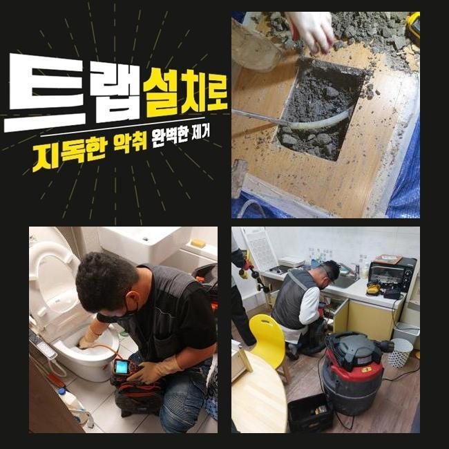
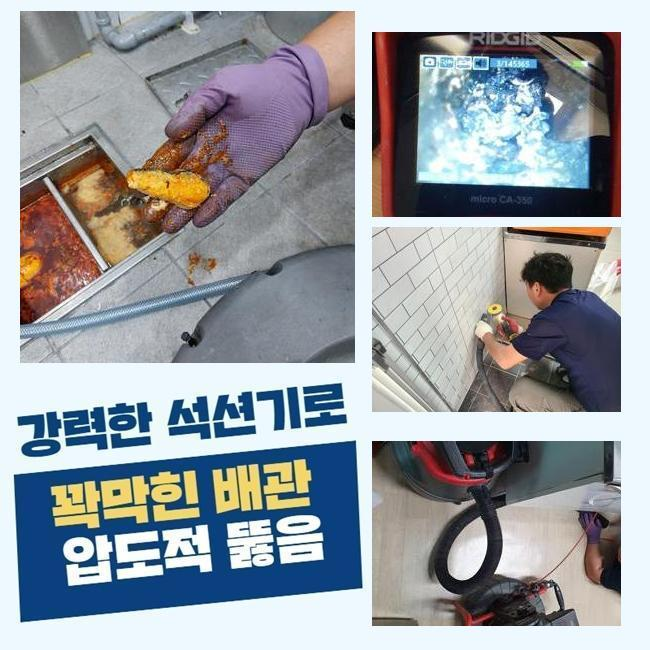
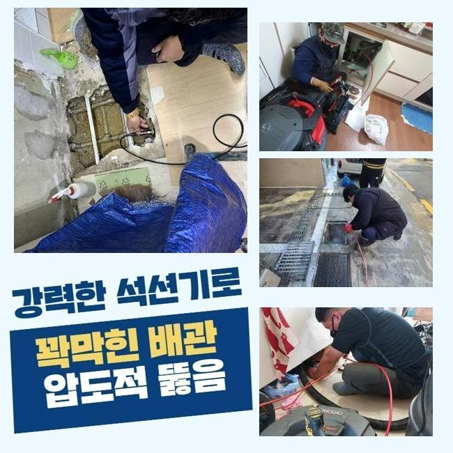
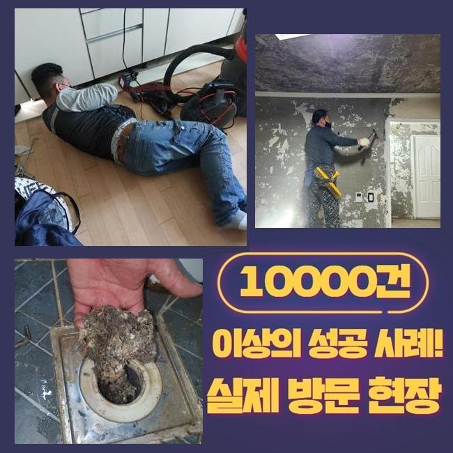
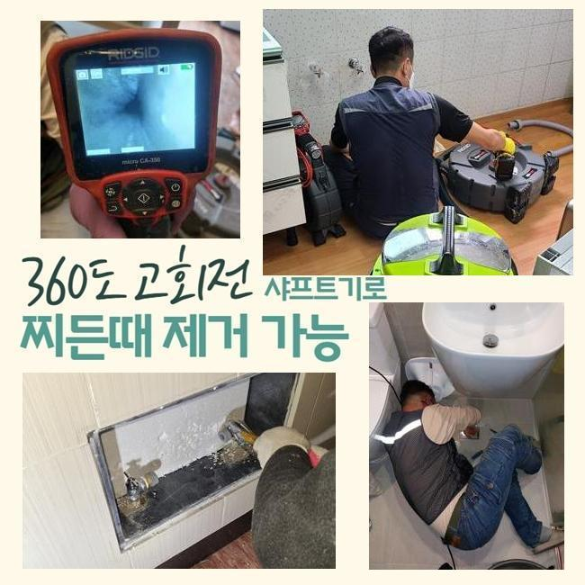
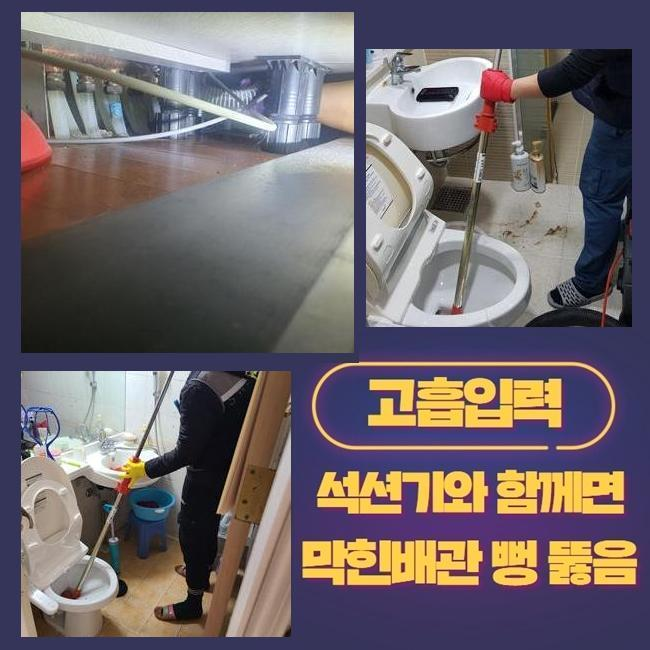

🏠 의정부 용현동하수구뚫음 녹양동 맨홀막힘 배관공사
용인 싱크대막힘 전문 시공 후기

📋 작업 개요
- 위치: 용인
- 서비스 유형: 싱크대막힘, 하수구막힘, 배관막힘, 맨홀막힘, 누수수리, 역류해결, 뚫는업체, 고압세척, 설비공사
- 작업 일시: 2024. 12. 11. 16:01
- 업체명: 하수구수사대 (010-5615-2118)
🔍 문제 상황
의정부 용현동하수구뚫음 녹양동 맨홀막힘 배관공사
하수구에서 물이 흐르지않을때 여러분들이라면 어떤방안으로 조치하고계신지요
대부분은 자기만의 방법대로 대처하곤하시죠
최근에내방한 작업사항으로 배관에관해 설명드릴게요
하수관은 사람의눈으로 파악하는것은 어렵기때문에 오염물이쌓여 배관막힘이 발생할수있죠
이런상태라면 빨리 대처해야하며 역류현상도 보인다면 조심해야해요
배관관련 현상들은 생활하는데 곤란함을 일으키므로 가능한빨리 처리해야하죠
하수도에서 이상현상을 발견하시면 배관수리공을 호출해서 처리해야해요
어떤장소라도 하수관이 막혔을경우 생활에지장을 발생시키기때문에 사전예방을 진행하는게 중요한부분입니다
오랜기간쌓인 이물질은 쉬운방법으로 처리되지않고 부주의하게 조치한다면 물샘증상까지 불거질수있죠
이렇기때문에 전문기사에게 빠르게도움을 요청해야합니다

🔎 원인 분석
💡 전문가 진단: 정밀 진단 장비를 사용하여 슬러지의 고착 여부를 판명하고 타격/세척 작업을 실시했습니다.
저희업체로 의뢰주신 고객님들의 불편한부분을 이해하고있어 해결해드리고자 뚫는장비를 갖춘후 방문드렸어요
욕실하수구쪽 막힘문제의경우 연식이오래된 상가의 노후화때문인것으로 알수있었는데요
화장실바닥막힘을 어떤방식으로 처리하는가 알아보세요!
막힘증세가 보일때 관리실로 문의해보았지만 처리되지않아 저희한테 연락주셨다고 하셨죠
긴급출동해 상황을확인하니 물을쓰게될때 물이고이는 증상이있었으며 밑에층에서 물샘현상도 발현되었어요
이렇게된이유는 하수도내에 물이가득차 흐르지못하고 막혔기때문이에요
신속한조치로 해결해야할것을 알수있었어요
이러한때는 전문가의도움이 필수적이에요
석션기를통하여 물을빼낸후 잔해물들을 제거했는데요
그치만 오염물이 즐비한 배관벽쪽은 하수구촬영기를 사용해서 소거작업을 착수했습니다
잔해물질이 약간이라도 잔여된다면 쌓이고쌓여 같은문제로 막힐수도있다보니 깔끔히 없애주었죠

🔧 작업 과정
주기적인세척과 점검해주는것이 필요할뿐아니라 이런일이 발발된다면 신속정확히 대처해줘야해요
다음현장장소에 방문하여 면밀하게 검사해보니 욕실배관쪽에 이물질들이 퇴적된것을 확인할수있었죠
이번장소는 굳어진오염물이 발견되었죠
고착물을 발견한경우 분해장비로 분해시켜야합니다
현재상황에 대하여 정확히체크하여 적합한장비들을 활용하는것이죠
플렉스샤프트끝에 노즐이돌면서 고착물질을 분해하는 작업을거쳤는데요
고착물을제거한뒤 잔여물들은 석션기를써서 빨아들여줘요
갑작스럽게 하수관에서 배수상태가 느리다거나 역류하고있다면 이것은 문제가있다는 신호에요
이런현상이 지속될경우 조속히 처리하는것이 좋아요
이미 막혀버렸다면 방임하지말고 뚫어내야합니다
막힘을미룬다면 하수관이손상되며 누수현상이 발현될수있어 미루시면 안되겠습니다
이러한일을 예방하려면 주기로 하수구시스템 검사를 진행하고 문제가있다면 신속하게 대처해야겠습니다
이런식으로 관리해준다면 더큰피해가 발현되는걸 방지할수있겠죠
싱크대하수구의 경우에는 내시경장비로 배관안속을 살폈고 오염물질이 가로막고있는걸 파악할수있었네요
잔해물을 분쇄하기보단 약품을통해 연화과정을 진행하기로 결정해주었죠
물리적인힘을 가하게되었을때 하수구를 손상입히는걸 방지해내기위해 약품으로 접근한거에요
약품처리를 해준뒤 흡입장비로 막힘을뚫었고 정상적으로 돌아오게되었어요


✅ 작업 완료
현장상태에 알맞게 대응하여 해당현상을 효율적으로 처리할수있었네요
마치고나서는 고객분께 방지할수있는 부분들을 설명드렸답니다
하수구망 및 하수도트랩을 설치해서 악취증세나 막힘문제들을 방지할수있다고 전달드린후 현장을나섰죠
저희업체는 어떤곳이든 1시간안쪽으로 방문이가능하고 분명하게 수립계획을 진행하기때문에 믿고의뢰바래요
오늘내용외에 궁금한것들이 있으실경우 편하실때 전화주신후 여쭈시면 상세한 상담진행 도와드리겠습니다




⚠️ 베란다 누수 및 방수 관리 방법
- ✅ 비가 많이 올 때 창틀 주변이나 아래층 천장에 얼룩이 생기는지 정기적으로 확인해 보세요.
- ✅ 우수관 주변 실리콘 마감이 들뜨거나 깨진 틈새가 있는지 손상 여부를 수시로 체크하세요.
- ✅ 베란다 바닥 타일의 줄눈(메지)이 소실되면 그 틈으로 물이 침투하여 누수가 유발됩니다.
- ✅ 누수 의심 증상 발견 시 방치하면 아래층 손실이 커지므로 즉시 전문가의 진단을 받으십시오.
💡 핵심 정리
- 확실한 장비 작업(내시경 점검 및 샤프트 스케일링)으로 원인을 뿌리 뽑습니다.
- 작업 후 1년 이내에 동일한 부위 재발 시 100% 무상 A/S 서비스를 보장합니다.
- 서울 · 경기 · 인천 전 지역에 24시간 언제든 긴급 출동할 수 있도록 항시 대기 중입니다.
❓ 자주 묻는 질문 (FAQ)
🚨 용인 싱크대막힘 문제로 고민이신가요?
정확한 원인 진단과 확실한 시공으로 재발 없는 해결을 약속드립니다.
24시간 긴급 출동 | 서울 · 경기 · 인천 전지역 | 1년 내 재발 시 무상 A/S